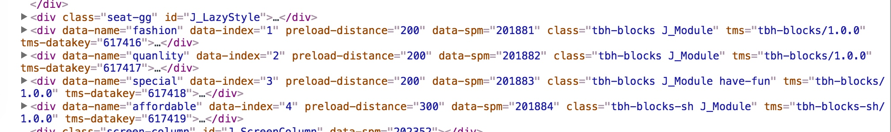
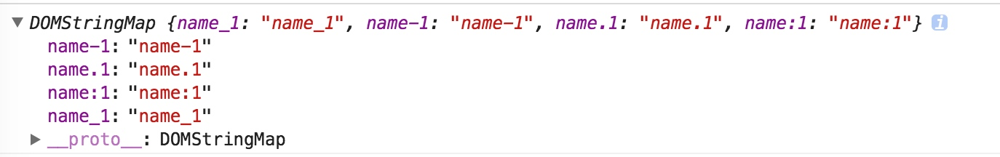
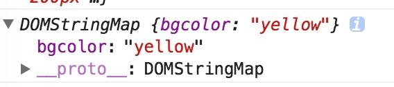
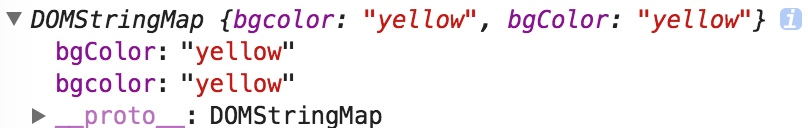
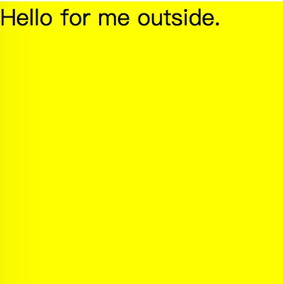

HTML5在元素中增加了data-*，可以允许用户自定义属性。这种可读写的方式极大的方便了
操作元素时的数据存储、状态保留。经常可以在各大主流网站上面看到它的使用，例如淘宝首页。

下面记录下一些使用细节。
语法
在语法上，我们可以在任何DOM元素上添加该属性，但是需要遵照一些命名规则。
命名规则
- 必须使用data-最为前缀，data-后面数据类型允许字符串，数字，-，.，:，_ 。当然了，在使用JavaScript获取时就不能单纯地将一些特殊字符直接点属性使用了。

- 不可以使用大写字母。这里说不可以是不太准确的，建议可能更加恰当。但是为了避免出错还是不要使用这种写法，尤其是驼峰式命名。因为获取dataset时，会看到输出的object中该属性都变为了小写。
举个例子
下面这段代码中加入了自定义属性data-bgColor，采用了驼峰式命名，希望能够记住该属性通过JavaScript动态赋值。
<div id="container2" data-bgColor="yellow"></div>
可是通过JavaScript获取到该属性时，却变为了小写。如下图。
var container2 = document.getElementById('container2');
var dataset2 = container2.dataset;
console.log(dataset2);

那如果非要使用驼峰式命名该如何呢？上面有个例子举得好像正好规避了这个问题。有这样的一个属性data-name-1，访问到的还是name-1，如果将其换为字符串data-bg-color，可以看到获取的时候就变为了驼峰。

这是因为浏览器有一个Name conversion（命名转换）的过程，在获取时将data-去掉，并且将之后的命名中如果含有破折号的，将其变为大写。当然了，变为大写的字符也是有范围的。首先它必须具有大写，ASCII中的A到Z。
any dash (U+002D) followed by an ASCII lowercase letter a to z, the dash is removed and the letter is transformed into its uppercase counterpart;
当然了，这是一个双向的过程。我们也可以给DOM元素指定不存在的data-属性。
container2.dataset.itemIndex = "1";
这时，在HTML中，将会如此渲染。如下图，可以看到又加上了破折号data-item-index。
any ASCII uppercase letter A to Z is transformed into a dash followed by its lowercase counterpart;
操作
JavaScript来获取data-*属性。
获取并操作元素样式
var container = document.getElementById('container');
var dataset = container.dataset;
container.style = `
width: ${dataset.width};
height: ${dataset.height};
background-color: ${dataset.bgcolor};`;

也可以在选取特定的元素上起作用。
const audio = document.querySelector(`audio[data-key="${e.keyCode}"]`);